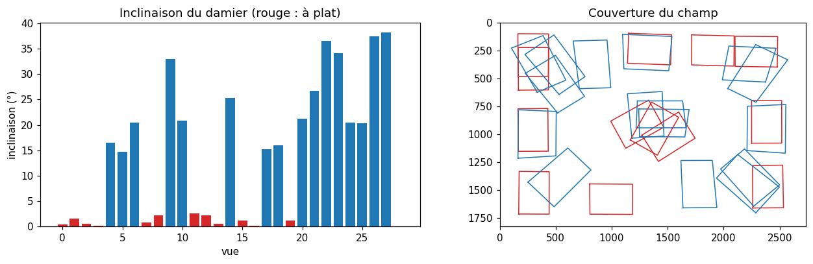
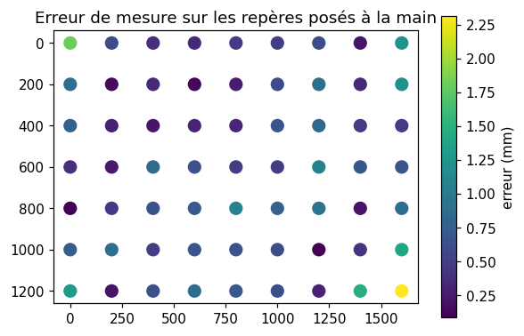
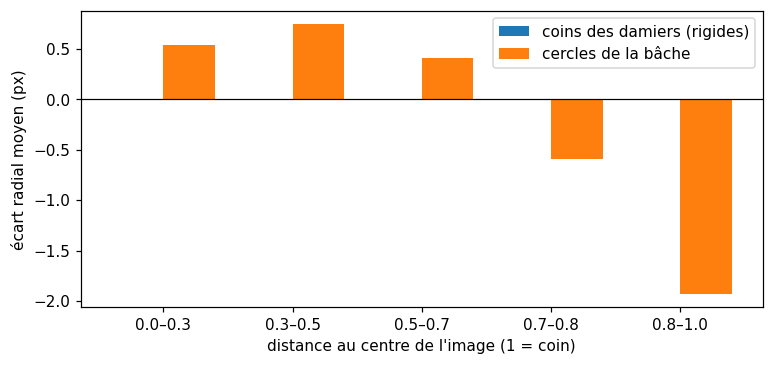

Une mire plate, face au capteur, ne contient que le rapport \(f_x/Z\).
Zhang · 13 vues à plat, moins de 5°
0,17 px, et une focale qui glisse

Les 29 poses, en largeur. Rouge : à plat, moins de 5°. Le tableau ne calibre que ces vues.
Départ
\(f_x\)
Distance
\(f_x/Z\)
RMS
6 mm
977 px
703 mm
1,390
0,171
8 mm
1 125 px
809 mm
1,390
0,171
10 mm
1 214 px
873 mm
1,390
0,171
12 mm
1 268 px
912 mm
1,390
0,171
Difficulté. Sans a priori, autre point de la même vallée : \(f_x=20690\,\mathrm{px}\), distance \(14{,}9\,\mathrm{m}\), \(k_3\approx -133\,000\), RMS \(0{,}19\,\mathrm{px}\). L’incertitude affichée, \(\pm 7\,\mathrm{px}\), ne veut plus rien dire. Écart entre les départs : \(25\,\%\).
29/29 damiers · 16 vues inclinées, jusqu’à 38°
L’inclinaison fixe la focale
8,41 mmfocale estimée nominale 8,00 mm · +5,1 %
0,188 pxRMS · \(f_x\approx f_y\) \(1752\pm 2{,}3\,\mathrm{px}\), centre \((1345,\,939)\)
Cercles tenus à l’écart. Avec correction : 0,64 mm, RMS 0,70, max 1,57. Sans : 2,75 · 3,03 · 5,15. La rangée de 1 800 mm est mesurée à 1 796 mm.

63 pastilles, autre grille, alignées sans changer l’échelle. Moyenne 0,65 mm, RMS 0,77, max 2,31. Échelle −0,18 mm/m.
Ce que l’homographie n’explique pas
Ensuite, c’est la scène

Hors du plan
7,1 mm
\[ \Delta X \approx X\frac{h}{Z}=900\times\frac{10}{1270}=7{,}1~\mathrm{mm} \]
Dix fois le RMS de mesure. Un objectif télécentrique annule cet effet.
Difficulté. Damiers rigides : résidu nul, même dans les coins. Bâche : \(+0{,}7\,\mathrm{px}\) au centre, \(-1{,}9\,\mathrm{px}\) au bord. La toile se bombe. On ne calibre pas \(K\) dessus.
Ce qu’on emporte · Zhang, PAMI 2000
Trois résultats
1
Incliner, puis douter du départ
RMS 0,19 px dans les deux cas. Écart de focale : 25 % à plat, 0 % avec les vues inclinées.
2
0,70 mm RMS, hors apprentissage
Distorsion corrigée. Repères indépendants : 0,77 mm RMS, échelle à −0,18 mm/m.
3
Ensuite la scène domine
Toile non plane, autour du millimètre. 10 mm d’épaisseur au bord : 7,1 mm. Objectif télécentrique.
Questions.
Texte à dire — ne pas projeter
Voix A
Questions probables
Réservé à la préparation. Les chiffres sont ceux des cellules exécutées, pas ceux du bloc « Synthèse » en fin de notebook.
Pendant l’oral
Ouvrir ce fichier dans un navigateur. Le jour J : texte masqué.
→slide suivante (espace, page suivante)←slide précédenteNafficher ou cacher le texte à direQquestions probablesOsommaire des slidesFplein écranBécran noirCmasquer les boutons du bandeau1–9, 0sauter à une slide (0 = la dernière)Échapfermer un panneau
Noms sur la slide de titre : dans le script, constante NOMS.